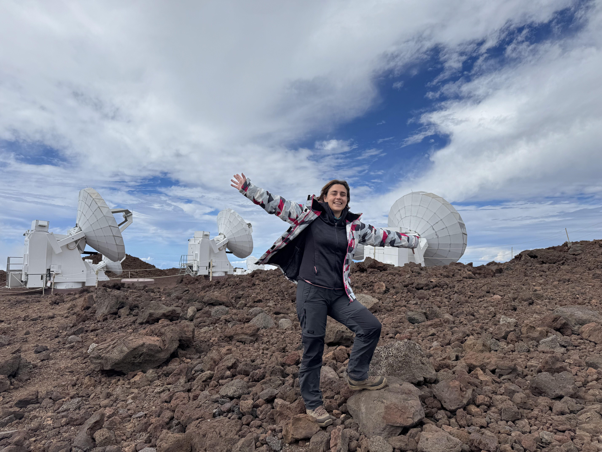

Welcome!
I’m a PhD student at the Instituto de Astrofísica de Canarias studying Substellar mass objects, such as brown dwarfs and free-floating planets, with the help of the Euclid space mission. Here you will find information about my past and present works, along with some extra materials.
Gallery

Latest News
- Mar 2025: Splinter session - Annual Euclid Consortium Meeting
- Feb 2025: La Silla Observing School
- Jan 2025: Submillimeter Array (SMA) Interferometry School
- Dec 2024: Observing run - Cerro Tololo
- Nov 2024: Writing and Communicating Your Science - an IAA-CSIC Severo Ochoa Workshop
- Sep 2024: ORP School on Multi-messenger Astrophysics
- Jul 2024: Talk - European Astronomical Society Annual Meeting (EAS)
- May 2024: Started my PhD at the IAC
- Jul 2022: Talk - COSPAR 44th Scientific Assembly
- Dec 2022: Paper accepted! The low-density cluster NGC 376 in the Small Magellanic Cloud